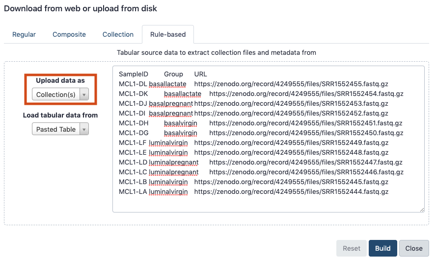
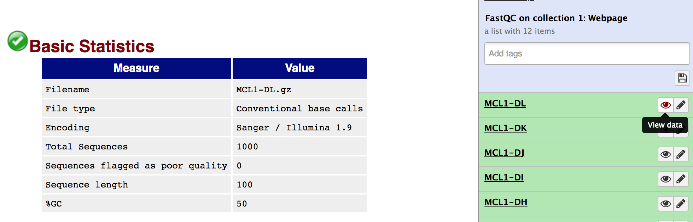
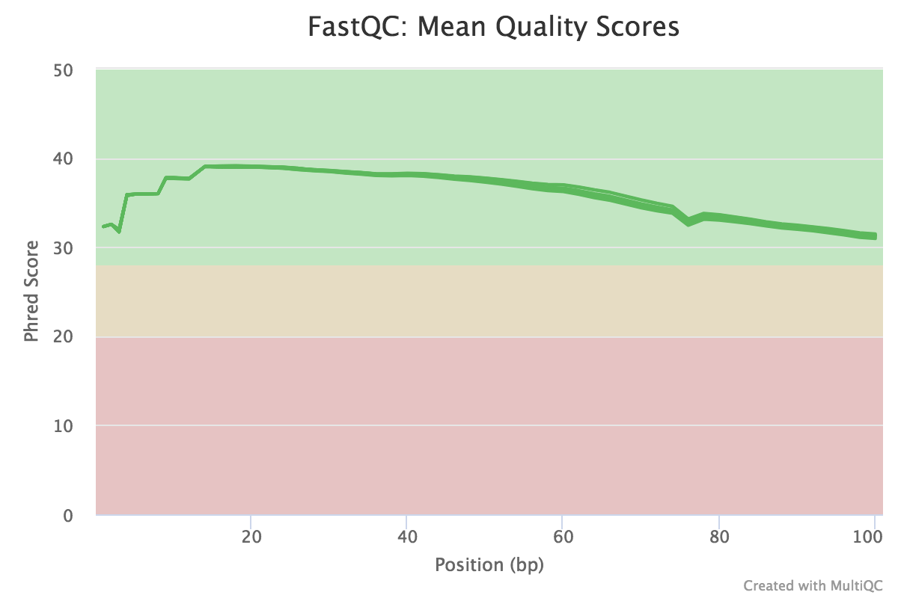
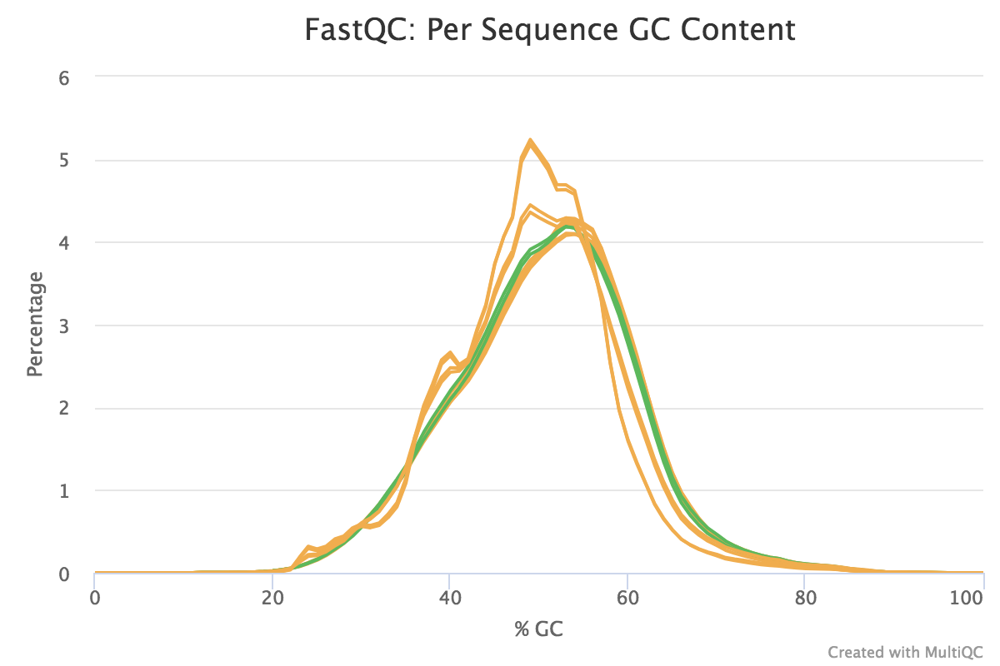
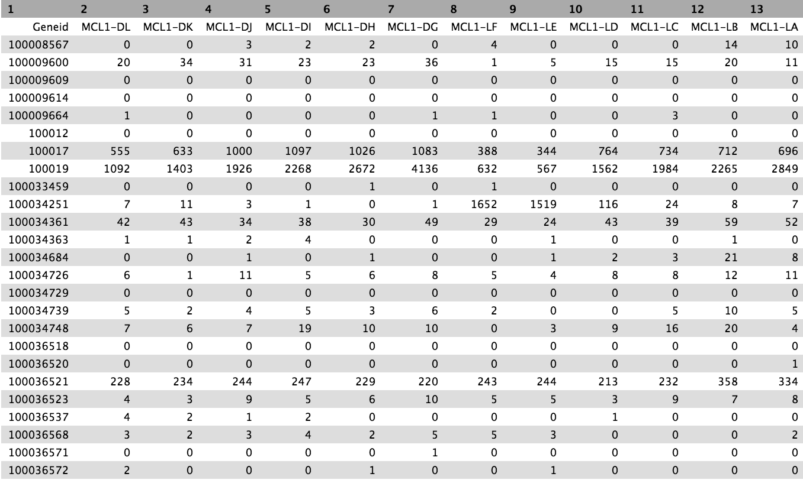
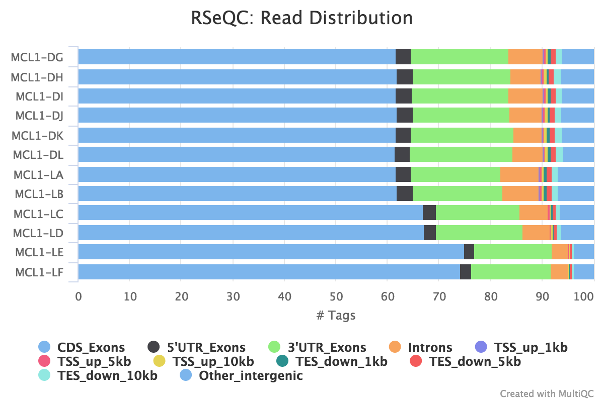

Measuring gene expression on a genome-wide scale has become common practice over the last two decades or so, with microarrays predominantly used pre-2008. With the advent of next generation sequencing technology in 2008, an increasing number of scientists use this technology to measure and understand changes in gene expression in often complex systems. As sequencing costs have decreased, using RNA-Seq to simultaneously measure the expression of tens of thousands of genes for multiple samples has never been easier. The cost of these experiments has now moved from generating the data to storing and analysing it.
There are many steps involved in analysing an RNA-Seq experiment. The analysis begins with sequencing reads (FASTQ files). These are usually aligned to a reference genome, if available. Then the number of reads mapped to each gene can be counted. This results in a table of counts, which is what we perform statistical analyses on to determine differentially expressed genes and pathways. The purpose of this tutorial is to demonstrate how to do read alignment and counting, prior to performing differential expression. Differential expression analysis with limma-voom is covered in an accompanying tutorial RNA-seq counts to genes. The tutorial here shows how to start from FASTQ data and perform the mapping and counting steps, along with associated Quality Control.
Mouse mammary gland dataset
The data for this tutorial comes from a Nature Cell Biology paper by Fu et al. 2015. Both the raw data (sequence reads) and processed data (counts) can be downloaded from Gene Expression Omnibus database (GEO) under accession number GSE60450.
This study examined the expression profiles of basal and luminal cells in the mammary gland of virgin, pregnant and lactating mice. Six groups are present, with one for each combination of cell type and mouse status. Note that two biological replicates are used here, two independent sorts of cells from the mammary glands of virgin, pregnant or lactating mice, however three replicates is usually recommended as a minimum requirement for RNA-seq.
Your results may be slightly different from the ones presented in this tutorial
due to differing versions of tools, reference data, external databases, or
because of stochastic processes in the algorithms.
Preparing the reads
Import data from URLs
Read sequences are usually stored in compressed (gzipped) FASTQ files. Before the differential expression analysis can proceed, these reads must be aligned to the reference genome and counted into annotated genes. Mappingreads to the genome is a very important task, and many different aligners are available, such as HISAT2 (Kim et al. 2015), STAR (Dobin et al. 2013) and Subread (Liao et al. 2013). Most mapping tasks require larger computers than an average laptop, so usually read mapping is done on a server in a linux-like environment, requiring some programming knowledge. However, Galaxy enables you to do this mapping without needing to know programming and if you don’t have access to a server you can try to use one of the publically available Galaxies e.g. usegalaxy.org, usegalaxy.eu, usegalaxy.org.au.
The raw reads used in this tutorial were obtained from SRA from the link in GEO for the the mouse mammary gland dataset (e.g ftp://ftp-trace.ncbi.nlm.nih.gov/sra/sra-instant/reads/ByStudy/sra/SRP%2FSRP045%2FSRP045534). For the purpose of this tutorial we are going to be working with a small part of the FASTQ files. We are only going to be mapping 1000 reads from each sample to enable running through all the steps quickly. If working with your own data you would use the full data and some results for the full mouse dataset will be shown for comparison. The small FASTQ files are available in Zenodo and the links to the FASTQ files are provided below.
If you are sequencing your own data, the sequencing facility will almost always provide compressed FASTQ files which you can upload into Galaxy. For sequence data available through URLs, The Galaxy Rule-based Uploader can be used to import the files. It is much quicker than downloading FASTQs to your computer and uploading into Galaxy and also enables importing as a Collection. When you have more than a few files, using Galaxy Collections helps keep the datasets organised and tidy in the history. Collections also make it easier to maintain the sample names through tools and workflows. If you are not familiar with collections, you can take a look at the Galaxy Collections tutorial for more details. The screenshots below show a comparison of what the FASTQ datasets for this tutorial would look like in the history if we imported them as datasets versus as a collection with the Rule-based Uploader.
Datasets
Collection
details Collections and sample names
Collections can also help to maintain the original sample names on the files throughout the tools used. The screenshots below show what we would see in one of the MultiQC reports that we will generate if we used datasets versus a collection.
Datasets
Collection
The information we need to import the samples for this tutorial (sample ID, Group, and link to the FASTQ file (URL) are in the grey box below.
In order to get these files into Galaxy, we will want to do a few things:
Strip the header out of the sample information (it doesn’t contain a URL Galaxy can download).
Define the file Identifier column (SampleID).
Define the URL column (URL) (this is the location Galaxy can download the data from).
hands_on Hands-on: Data upload
Create a new history for this tutorial e.g. RNA-seq reads to counts
tip Tip: Creating a new history
Click the new-history icon at the top of the history panel
If the new-history is missing:
Click on the galaxy-gear icon (History options) on the top of the history panel
Select the option Create New from the menu
tip Tip: Renaming a history
Click on Unnamed history (or the current name of the history) (Click to rename history) at the top of your history panel
Type the new name
Press Enter
Import the files from Zenodo using Galaxy’s Rule-based Uploader.
Open the Galaxy Upload Manager
Click the tab Rule-based
“Upload data as”: Collection(s)
“Load tabular data from”: Pasted Table
Paste the table from the grey box above. (You should now see below)
Click Build
Figure 2: Rule-based Uploader
In the rules editor that pops up:
Remove the header. From the Filter menu select First or Last N Rows
“Filter which rows?”: first
“Filter how many rows?”: 1
Click Apply
Define the Identifier and URL columns. From the Rules menu select Add / Modify Column Definitions
Click Add Definition button and select List Identifier(s)
“List Identifier(s)”: A
Click Add Definition button again and select URL instead
“URL”: C
Click Apply, and you should see your new column definitions listed
Name the collection. For “Name” enter: fastqs(You should now see below)
Click Upload
Figure 3: Rules Editor
You should see a collection (list) called fastqs in your history containing all 12 FASTQ files.
If your data is not accessible by URL, for example, if your FASTQ files are located on your laptop and are not too large, you can upload into a collection as below. If they are large you could use FTP. You can take a look at the Getting data into Galaxy slides for more information.
tip Tip: Upload local files into a collection
Open the Galaxy Upload Manager
Click the tab Collection
Click Choose Local Files and locate the files you want to upload
“Collection Type”: List
In the pop up that appears:
“Name”: fastqs
Click Create list
If your FASTQ files are located in Shared Data, you can import them into your history as a collection as below.
tip Tip: Import files from Shared Data into a collection
In the Menu at the top go to Shared Data > Data Libraries
Locate your FASTQ files
Tick the checkboxes to select the files
From the To History menu select as a Collection
In the pop up that appears:
“Which datasets?”: current selection
“Collection type”: List
“Select history”: select your History
Click Continue
In the pop up that appears:
“Name”: fastqs
Click Create list
Take a look at one of the FASTQ files to see what it contains.
hands_on Hands-on: Take a look at FASTQ format
Click on the collection name (fastqs)
Click on the galaxy-eye (eye) icon of one of the FASTQ files to have a look at what it contains
During sequencing, errors are introduced, such as incorrect nucleotides being called. These are due to the technical limitations of each sequencing platform. Sequencing errors might bias the analysis and can lead to a misinterpretation of the data. Every base sequence gets a quality score from the sequencer and this information is present in the FASTQ file. A quality score of 30 corresponds to a 1 in 1000 chance of an incorrect base call (a quality score of 10 is a 1 in 10 chance of an incorrect base call). To look at the overall distribution of quality scores across the reads, we can use FastQC.
Sequence quality control is therefore an essential first step in your analysis. We will use similar tools as described in the “Quality control” tutorial: FastQC and Cutadapt (Marcel 2011).
hands_on Hands-on: Check raw reads with FastQC
FastQCtool with the following parameters:
param-collection“Short read data from your current history”: fastqs (Input dataset collection)
Inspect the Webpage output of FastQCtool for the MCL1-DL sample by clicking on the galaxy-eye (eye) icon
tip Tip: Selecting a dataset collection as input
Click on param-collectionDataset collection in
front of the input parameter you want to supply the collection to.
Select the collection you want to use from the list
question Questions
What is the read length?
What base quality score encoding is used?
solution Solution
The read length is 100 bp.
Sanger quality score encoding is used.
This information can be seen at the top of the FastQC Webpage as below.
Figure 4: FastQC Webpage
The FastQC report contains a lot of information and we can look at the report for each sample. However, that is quite a few reports, 12 for this dataset. If you had more samples it could be a lot more. Luckily, there is a very useful tool called MultiQC (Ewels et al. 2016) that can summarise QC information for multiple samples into a single report. We’ll generate a few MultiQC outputs in this tutorial so we’ll add name tags so we can differentiate them.
hands_on Hands-on: Aggregate FastQC reports with MultiQC
MultiQCtool with the following parameters to aggregate the FastQC reports
In “Results”
param-select“Which tool was used generate logs?”: FastQC
In “FastQC output”
param-select“Type of FastQC output?”: Raw data
param-collection“FastQC output”: RawData files (output of FastQCtool on trimmed reads)
Add a tag #fastqc-raw to the Webpage output from MultiQC and inspect the webpage
tip Tip: Adding a tag
Click on the dataset
Click on galaxy-tagsEdit dataset tags
Add a tag starting with #
Tags starting with # will be automatically propagated to the outputs of tools using this dataset.
Check that the tag is appearing below the dataset name
Note that these are the results for just 1000 reads. The FastQC results for the full dataset are shown below. The 1000 reads are the first reads from the FASTQ files, and the first reads usually originate from the flowcell edges, so we can expect that they may have lower quality and the patterns may be a bit different from the distribution in the full dataset.
You should see that most of the plots in the small FASTQs look similar to the full dataset. However, in the small FASTQs, there is less duplication, some Ns in the reads and some overrepresented sequences.
Figure 5: General StatisticsFigure 6: Sequence CountsFigure 7: Sequence QualityFigure 8: Per Sequence Quality ScoresFigure 9: Per Sequence GC ContentFigure 10: Per base N contentFigure 11: Sequence Duplication LevelsFigure 12: Adapter Content
What do you think of the overall quality of the sequences?
solution Solution
Overall, the samples look pretty good. The main things to note here are:
The base quality is high in all samples.
Some Illumina adapter has been detected.
Some duplication in RNA-seq can be normal due to the presence of highly expressed genes. However, for some reason MCL1-LE and MCL1-LF have higher numbers of duplicates detected than the other samples.
We will use Cutadapt to trim the reads to remove the Illumina adapter and any low quality bases at the ends (quality score < 20). We will discard any sequences that are too short (< 20bp) after trimming. We will also output the Cutadapt report for summarising with MultiQC.
The Cutadapt tool Help section provides the sequence we can use to trim this standard Illumina adapter AGATCGGAAGAGCACACGTCTGAACTCCAGTCAC, as given on the Cutadapt website. For trimming paired-end data see the Cutadapt Help section. Other Illumina adapter sequences (e.g. Nextera) can be found at the Illumina website. Note that Cutadapt requires at least three bases to match between adapter and read to reduce the number of falsely trimmed bases, which can be changed in the Cutadapt options if desired.
Trim reads
hands_on Hands-on: Trim reads with Cutadapt
Cutadapttool with the following parameters:
param-select“Single-end or Paired-end reads?”: Single-end
The reads are no longer all the same length, we now have sequences of different lengths detected.
Mapping
Now that we have prepared our reads, we can align the reads for our 12 samples. There is an existing reference genome for mouse and we will map the reads to that. The current most widely used version of the mouse reference genome is mm10/GRCm38 (although note that there is a new version mm39 released June 2020). Here we will use HISAT2 to align the reads. HISAT2 is the descendent of TopHat, one of the first widely-used aligners, but alternative mappers could be used, such as STAR. See the RNA-seq ref-based tutorial for more information on RNA-seq mappers. There are often numerous mapping parameters that we can specify, but usually the default mapping parameters are fine. However, library type (paired-end vs single-end) and library strandness (stranded vs unstranded) require some different settings when mapping and counting, so they are two important pieces of information to know about samples. The mouse data comprises unstranded, single-end reads so we will specify that where necessary. HISAT2 can output a mapping summary file that tells what proportion of reads mapped to the reference genome. Summary files for multiple samples can be summarised with MultiQC. As we’re only using a subset of 1000 reads per sample, aligning should just take a minute or so. To run the full samples from this dataset would take longer.
Map reads to reference genome
hands_on Hands-on: Map reads to reference with HISAT2
HISAT2tool with the following parameters:
param-select“Source for the reference genome”: Use a built-in genome
param-select“Select a reference genome”: mm10
param-select“Is this a single or paired library?”: Single-end
param-collection“FASTA/Q file”: Read 1 Output (output of Cutadapttool)
In “Summary Options”:
param-check“Output alignment summary in a more machine-friendly style.”: Yes
param-check“Print alignment summary to a file.”: Yes
MultiQCtool with the following parameters to aggregate the HISAT2 summary files
In “Results”
param-select“Which tool was used generate logs?”: HISAT2
param-collection“Output of HISAT2”: Mapping summary (output of HISAT2tool)
Add a tag #hisat to the Webpage output from MultiQC and inspect the webpage
comment Settings for Paired-end or Stranded reads
If you have paired-endreads
Select “Is this a single or paired library”Paired-end or Paired-end Dataset Collection or Paired-end data from single interleaved dataset
If you have strandedreads
Select “Specify strand information”: Forward (FR) or Reverse (RF)
The MultiQC plot below shows the result from the full dataset for comparison.
Figure 15: HISAT2 mapping
An important metric to check is the percentage of reads mapped to the reference genome. A low percentage can indicate issues with the data or analysis. Over 90% of reads have mapped in all samples, which is a good mapping rate, and the vast majority of reads have mapped uniquely, they haven’t mapped to multiple locations in the reference genome.
It is also good practice to visualise the read alignments in the BAM file, for example using IGV, see the RNA-seq ref-based tutorial.
HISAT2 generates a BAM file with mapped reads.
A BAM (Binary Alignment Map) file is a compressed binary file storing the read sequences, whether they have been aligned to a reference sequence (e.g. a chromosome), and if so, the position on the reference sequence at which they have been aligned.
hands_on Hands-on: Inspect a BAM/SAM file
Inspect the param-file output of HISAT2tool
A BAM file (or a SAM file, the non-compressed version) consists of:
A header section (the lines starting with @) containing metadata particularly the chromosome names and lengths (lines starting with the @SQ symbol)
An alignment section consisting of a table with 11 mandatory fields, as well as a variable number of optional fields:
Col
Field
Type
Brief Description
1
QNAME
String
Query template NAME
2
FLAG
Integer
Bitwise FLAG
3
RNAME
String
References sequence NAME
4
POS
Integer
1- based leftmost mapping POSition
5
MAPQ
Integer
MAPping Quality
6
CIGAR
String
CIGAR String
7
RNEXT
String
Ref. name of the mate/next read
8
PNEXT
Integer
Position of the mate/next read
9
TLEN
Integer
Observed Template LENgth
10
SEQ
String
Segment SEQuence
11
QUAL
String
ASCII of Phred-scaled base QUALity+33
question Questions
Which information do you find in a SAM/BAM file?
What is the additional information compared to a FASTQ file?
solution Solution
Sequences and quality information, like a FASTQ
Mapping information, Location of the read on the chromosome, Mapping quality, etc
tip Tip: Downloading a collection
To download a collection of datasets (e.g. the collection of BAM files) click on the floppy disk icon within the collection. This will download a tar file containing all the datasets in the collection. Note that for BAM files the .bai indexes (required for IGV) will be included automatically in the download.
Counting
The alignment produces a set of BAM files, where each file contains the read alignments for each sample. In the BAM file, there is a chromosomal location for every read that mapped. Now that we have figured out where each read comes from in the genome, we need to summarise the information across genes or exons. The mapped reads can be counted across mouse genes by using a tool called featureCounts (Liao et al. 2013). featureCounts requires gene annotation specifying the genomic start and end position of each exon of each gene. For convenience, featureCounts contains built-in annotation for mouse (mm10, mm9) and human (hg38, hg19) genome assemblies, where exon intervals are defined from the NCBI RefSeq annotation of the reference genome. Reads that map to exons of genes are added together to obtain the count for each gene, with some care taken with reads that span exon-exon boundaries. The output is a count for each Entrez Gene ID, which are numbers such as 100008567. For other species, users will need to read in a data frame in GTF format to define the genes and exons. Users can also specify a custom annotation file in SAF format. See the tool help in Galaxy, which has an example of what an SAF file should like like, or the Rsubread users guide for more information.
comment Comment
In this example we have kept many of the default settings, which are typically optimised to work well under a variety of situations. For example, the default setting for featureCounts is that it only keeps reads that uniquely map to the reference genome. For testing differential expression of genes, this is preferred, as the reads are unambigously assigned to one place in the genome, allowing for easier interpretation of the results. Understanding all the different parameters you can change involves doing a lot of reading about the tool that you are using, and can take a lot of time to understand! We won’t be going into the details of the parameters you can change here, but you can get more information from looking at the tool help.
Count reads mapped to genes
hands_on Hands-on: Count reads mapped to genes with featureCounts
featureCountstool with the following parameters:
param-collection“Alignment file”: aligned reads (BAM) (output of HISAT2tool)
param-select“Which tool was used generate logs?”: featureCounts
param-collection“Output of FeatureCounts”: featureCounts summary (output of featureCountstool)
Add a tag #featurecounts to the Webpage output from MultiQC and inspect the webpage
comment Settings for Paired-end or Stranded reads
If you have paired-endreads
Click “Options for paired-end reads”
param-select“Count fragments instead of reads”: Enabled; fragments (or templates) will be counted instead of reads
If you have strandedreads
param-select Select “Specify strand information”: Stranded (Forward) or Stranded (Reverse)
The MultiQC plot below shows the result from the full dataset for comparison.
Figure 16: featureCounts assignments
question Questions
What % reads are assigned to exons?
solution Solution
~60-70% of reads are assigned to exons. This is a fairly typical number for RNA-seq.
The counts for the samples are output as tabular files. Take a look at one. The numbers in the first column of the counts file represent the Entrez gene identifiers for each gene, while the second column contains the counts for each gene for the sample.
Create count matrix
The counts files are currently in the format of one file per sample. However, it is often convenient to have a count matrix. A count matrix is a single table containing the counts for all samples, with the genes in rows and the samples in columns. The counts files are all within a collection so we can use the GalaxyColumn Join on Collection tool to easily create a count matrix from the single counts files.
hands_on Hands-on: Create count matrix with Column Join on Collection
Column Join on Collectiontool with the following parameters:
param-collection“Tabular files”: Counts (output of featureCountstool)
param-text“Identifier column”: 1
param-text“Number of header lines in each input file”: 1
param-check“Add column name to header”: No
Take a look at the output. The tutorial uses a small subset of the data ~ 1000 reads per sample to save on processing time. Most rows in that matrix will contain all zeros, there will be ~600 non-zero rows. The output for the full dataset is shown below.
Figure 17: Count matrix
Now it is easier to see the counts for a gene across all samples. The accompanying tutorial, RNA-seq counts to genes, shows how gene information (symbols etc) can be added to a count matrix.
Generating a QC summary report
There are several additional QCs we can perform to better understand the data, to see if it’s good quality. These can also help determine if changes could be made in the lab to improve the quality of future datasets.
We’ll use a prepared workflow to run the first few of the QCs below. This will also demonstrate how you can make use of Galaxy workflows to easily run and reuse multiple analysis steps. The workflow will run the first three tools: Infer Experiment, MarkDuplicates and IdxStats and generate a MultiQC report. You can then edit the workflow if you’d like to add other steps.
hands_on Hands-on: Run QC report workflow
Import the workflow into Galaxy
Copy the URL (e.g. via right-click) of this workflow or download it to your computer.
Import the workflow into Galaxy
tip Tip: Importing a workflow
Click on Workflow on the top menu bar of Galaxy. You will see a list of all your workflows.
Click on the upload icon galaxy-upload at the top-right of the screen
Provide your workflow
Option 1: Paste the URL of the workflow into the box labelled “Archived Workflow URL”
Option 2: Upload the workflow file in the box labelled “Archived Workflow File”
Open the Galaxy Upload Manager (galaxy-upload on the top-right of the tool panel)
Select Paste/Fetch Data
Paste the link into the text field
Press Start
Close the window
By default, Galaxy uses the URL as the name, so rename the files with a more useful name.
Run Workflow QC Reportworkflow using the following parameters:
“Send results to a new history”: No
param-file“1: Reference genes”: the imported RefSeq BED file
param-collection“2: BAM files”: aligned reads (BAM) (output of HISAT2tool)
tip Tip: Running a workflow
Click on Workflow on the top menu bar of Galaxy. You will see a list of all your workflows.
Click on the workflow-run (Run workflow) button next to your workflow
Configure the workflow as needed
Click the Run Workflow button at the top-right of the screen
You may have to refresh your history to see the queued jobs
Inspect the Webpage output from MultiQC
You do not need to run the hands-on steps below. They are just to show how you could run the tools individually and what parameters to set.
Strandness
As far as we know this data is unstranded, but as a sanity check you can check the strandness. You can use RSeQC Infer Experiment tool to “guess” the strandness, as explained in the RNA-seq ref-based tutorial. This is done through comparing the “strandness of reads” with the “strandness of transcripts”. For this tool, and many of the other RSeQC (Wang et al. 2012) tools, a reference bed file of genes (reference genes) is required. RSeQC provides some reference BED files for model organisms. You can import the RSeQC mm10 RefSeq BED file from the link https://sourceforge.net/projects/rseqc/files/BED/Mouse_Mus_musculus/mm10_RefSeq.bed.gz/download (and rename to reference genes) or import a file from Shared data if provided. Alternatively, you can provide your own BED file of reference genes, for example from UCSC (see the Peaks to Genes tutorial. Or the Convert GTF to BED12 tool can be used to convert a GTF into a BED file.
hands_on Hands-on: Check strandness with Infer Experiment
Infer Experimenttool with the following parameters:
param-collection“Input .bam file”: aligned reads (BAM) (output of HISAT2tool)
param-file“Reference gene model”: reference genes (Reference BED file)
MultiQCtool with the following parameters:
In “1: Results”:
param-select“Which tool was used generate logs?”: RSeQC
param-select“Type of RSeQC output?”: infer_experiment
param-collection“RSeQC infer_experiment output”: Infer Experiment output (output of Infer Experimenttool)
Inspect the Webpage output from MultiQC
The MultiQC plot below shows the result from the full dataset for comparison.
Figure 18: Infer Experiment
question Questions
Do you think the data is stranded or unstranded?
solution Solution
It is unstranded as approximately equal numbers of reads have aligned to the sense and antisense strands.
Duplicate reads
Duplicate reads are usually kept in RNA-seq differential expression analysis as they can come from highly-expressed genes but it is still a good metric to check. A high percentage of duplicates can indicate a problem with the sample, for example, PCR amplification of a low complexity library (not many transcripts) due to not enough RNA used as input. FastQC gives us an idea of duplicates in the reads before mapping (note that it just takes a sample of the data). We can assess the numbers of duplicates in all mapped reads using the Picard MarkDuplicates tool. Picard considers duplicates to be reads that map to the same location, based on the start position of where the read maps. In general, we consider normal to obtain up to 50% of duplication.
hands_on Hands-on: Check duplicate reads with MarkDuplicates
MarkDuplicatestool with the following parameters:
param-collection“Select SAM/BAM dataset or dataset collection”: aligned reads (BAM) (output of HISAT2tool)
MultiQCtool with the following parameters:
In “1: Results”:
param-select“Which tool was used generate logs?”: Picard
param-select“Type of Picard output?”: Markdups
param-collection“Picard output”: MarkDuplicate metrics (output of MarkDuplicatestool)
Inspect the Webpage output from MultiQC
The MultiQC plot below shows the result from the full dataset for comparison.
Figure 19: MarkDups metrics
question Questions
Which two samples have the most duplicates detected?
solution Solution
MCL1-LE and MCL1-LF have the highest number of duplicates in mapped reads compared to the other samples, similar to what we saw in the raw reads with FastQC.
Reads mapped to chromosomes
You can check the numbers of reads mapped to each chromosome with the Samtools IdxStats tool. This can help assess the sample quality, for example, if there is an excess of mitochondrial contamination. It could also help to check the sex of the sample through the numbers of readsmapping to X/Y or to see if any chromosomes have highly expressed genes.
hands_on Hands-on: Count readsmapping to each chromosome with IdxStats
IdxStatstool with the following parameters:
param-collection“BAM file”: aligned reads (BAM) (output of HISAT2tool)
MultiQCtool with the following parameters:
In “1: Results”:
param-select“Which tool was used generate logs?”: Samtools
param-select“Type of Samtools output?”: idxstats
param-collection“Samtools idxstats output”: IdxStats output (output of IdxStatstool)
Inspect the Webpage output from MultiQC
The MultiQC plot below shows the result from the full dataset for comparison.
Are the samples male or female? (If a sample is not in the XY plot it means no reads mapped to Y)
solution Solution
Some of the samples have very high mapping on chromosome 5. What is going on there?
The samples appear to be all female as there are few readsmapping to the Y chromosome. As this is a experiment studying virgin, pregnant and lactating mice if we saw large numbers of readsmapping to the Y chromosome in a sample it would be unexpected and a probable cause for concern.
Gene body coverage (5’-3’)
The coverage of reads along gene bodies can be assessed to check if there is any bias in coverage. For example, a bias towards the 3’ end of genes could indicate degradation of the RNA. Alternatively, a 3’ bias could indicate that the data is from a 3’ assay (e.g. oligodT-primed, 3’RNA-seq). You can use the RSeQC Gene Body Coverage (BAM) tool to assess gene body coverage in the BAM files.
hands_on Hands-on: Check coverage of genes with Gene Body Coverage (BAM)
Gene Body Coverage (BAM)tool with the following parameters:
“Run each sample separately, or combine mutiple samples into one plot”: Run each sample separately
param-collection“Input .bam file”: aligned reads (BAM) (output of HISAT2tool)
param-select“Which tool was used generate logs?”: RSeQC
param-select“Type of RSeQC output?”: gene_body_coverage
param-collection“RSeQC gene_body_coverage output”: Gene Body Coverage (BAM) (text) (output of Gene Body Coverage (
BAM)tool)
Inspect the Webpage output from MultiQC
The MultiQC plot below shows the result from the full dataset for comparison.
Figure 22: Gene Body Coverage
The plot below from the RSeQC website shows what samples with 3’biased coverage would look like.
Figure 23: Gene Body Coverage comparison
question Questions
What do you think of the coverage across gene bodies in these samples?
solution Solution
It looks good. This plot looks a bit noisy in the small FASTQs but it still shows there’s pretty even coverage from 5’ to 3’ ends with no obvious bias in all the samples.
Read distribution across features (exons, introns, intergenic..)
We can also check the distribution of reads across known gene features, such as exons (CDS, 5’UTR, 3’UTR), introns and intergenic regions. In RNA-seq we expect most reads to map to exons rather than introns or intergenic regions. It is also the reads mapped to exons that will be counted so it is good to check what proportions of reads have mapped to those. High numbers of readsmapping to intergenic regions could indicate the presence of DNA contamination.
hands_on Hands-on: Check distribution of reads with Read Distribution
Read Distributiontool with the following parameters:
param-collection“Input .bam/.sam file”: aligned reads (BAM) (output of HISAT2tool)
param-select“Which tool was used generate logs?”: RSeQC
param-select“Type of RSeQC output?”: read_distribution
param-collection“RSeQC read_distribution output”: Read Distribution output (output of Read Distributiontool)
Inspect the Webpage output from MultiQC
The MultiQC plot below shows the result from the full dataset for comparison.
Figure 24: Read Distribution
question Questions
What do you think of the read distribution?
solution Solution
It looks good, most of the reads have mapped to exons and not many to introns or intergenic regions. The samples have pretty consistent read distribution, albeit with slightly higher numbers of readsmapping to CDS exons for MCL1-LC and MCL1-LD, and MCL1-LE and MCL1-LF have more readsmapping to CDS exons than the other samples.
The MultiQC report can be downloaded by clicking on the floppy disk icon on the dataset in the history.
question Questions
Can you think of any other QCs that could be performed on RNA-seq reads?
solution Solution
The reads could be checked for:
Ribosomal contamination
Contamination with other species e.g. bacteria
GC bias of the mapped reads
This is single-end data but paired-end mapped reads could be checked for fragment size (distance between the read pairs).
Conclusion
In this tutorial we have seen how reads (FASTQ files) can be converted into counts. We have also seen QC steps that can be performed to help assess the quality of the data. A follow-on tutorial, RNA-seq counts to genes, shows how to perform differential expression and QC on the counts for this dataset.
keypoints Key points
In RNA-seq, reads (FASTQs) are mapped to a reference genome with a spliced aligner (e.g HISAT2, STAR)
The aligned reads (BAMs) can then be converted to counts
Many QC steps can be performed to help check the quality of the data
MultiQC can be used to create a nice summary report of QC information
The Galaxy Rule-based Uploader, Collections and Workflows can help make analysis more efficient and easier
Useful literature
Further information, including links to documentation and original publications, regarding the tools, analysis techniques and the interpretation of results described in this tutorial can be found here.
Liao, Y., G. K. Smyth, and W. Shi, 2013 The Subread aligner: fast, accurate and scalable read mapping by seed-and-vote. Nucleic Acids Research 41: e108–e108.10.1093/nar/gkt214
Kim, D., B. Langmead, and S. L. Salzberg, 2015 HISAT: a fast spliced aligner with low memory requirements. Nature Methods 12: 357.https://www.nature.com/articles/nmeth.3317
Fu, N. Y., A. C. Rios, B. Pal, R. Soetanto, A. T. L. Lun et al., 2015 EGF-mediated induction of Mcl-1 at the switch to lactation is essential for alveolar cell survival. Nature Cell Biology 17: 365–375.10.1038/ncb3117
Batut et al., 2018 Community-Driven Data Analysis Training for Biology Cell Systems 10.1016/j.cels.2018.05.012
details BibTeX
@misc{transcriptomics-rna-seq-reads-to-counts,
author = "Maria Doyle and Belinda Phipson and Harriet Dashnow",
title = "RNA-Seq reads to counts (Galaxy Training Materials)",
year = "2021",
month = "01",
day = "06"
url = "\url{/training-material/topics/transcriptomics/tutorials/rna-seq-reads-to-counts/tutorial.html}",
note = "[Online; accessed TODAY]"
}
@article{Batut_2018,
doi = {10.1016/j.cels.2018.05.012},
url = {https://doi.org/10.1016%2Fj.cels.2018.05.012},
year = 2018,
month = {jun},
publisher = {Elsevier {BV}},
volume = {6},
number = {6},
pages = {752--758.e1},
author = {B{\'{e}}r{\'{e}}nice Batut and Saskia Hiltemann and Andrea Bagnacani and Dannon Baker and Vivek Bhardwaj and Clemens Blank and Anthony Bretaudeau and Loraine Brillet-Gu{\'{e}}guen and Martin {\v{C}}ech and John Chilton and Dave Clements and Olivia Doppelt-Azeroual and Anika Erxleben and Mallory Ann Freeberg and Simon Gladman and Youri Hoogstrate and Hans-Rudolf Hotz and Torsten Houwaart and Pratik Jagtap and Delphine Larivi{\`{e}}re and Gildas Le Corguill{\'{e}} and Thomas Manke and Fabien Mareuil and Fidel Ram{\'{\i}}rez and Devon Ryan and Florian Christoph Sigloch and Nicola Soranzo and Joachim Wolff and Pavankumar Videm and Markus Wolfien and Aisanjiang Wubuli and Dilmurat Yusuf and James Taylor and Rolf Backofen and Anton Nekrutenko and Björn Grüning},
title = {Community-Driven Data Analysis Training for Biology},
journal = {Cell Systems}
}
congratulations Congratulations on successfully completing this tutorial!
curriculum Do you want to extend your knowledge? Follow one of our recommended follow-up trainings:
 Maria Doyle
Maria Doyle Belinda Phipson
Belinda Phipson Harriet Dashnow
Harriet Dashnow